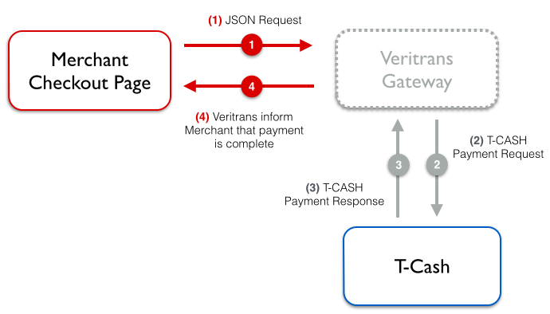

Integrasi VT-Direct (T-Cash)
Setiap metode pembayaran memiliki tahapan integrasi yang berbeda. Dokumentasi pada halaman ini bertujuan untuk membantu anda melakukan integrasi VT-Direct dengan metode pembayaran T-Cash. Apabila butuh bantuan, silahkan hubungi kami di support@veritrans.co.id atau kunjungi halaman support kami.
Telkomsel Cash (T-CASH) merupakan layanan uang elektronik (E-money) yang memberikan kemudahan bagi Anda dalam melakukan transaksi keuangan melalui ponsel. Metode ini memungkinkan pelanggan melakukan transaksi pembayaran dengan memasukkan 10 digit token yang didapat dari Telkomsel sebagai validasi transaksi. Untuk info lebih lengkap dapat diperoleh di website T-Cash.
Untuk mengaktifkan metode pembayaran T-Cash (otomatis aktif pada mode Sandbox), anda perlu menghubungi sales representative Veritrans.
Alur Proses Transaksi

Tahapan Integrasi VT-Direct T-Cash
- Membuat Form
- Charge Transaksi
- Status Transaksi
Membuat Form
Pada tahap ini, kita akan mencoba membuat form transaksi T-Cash pada file form_vtdirect_tcash.html. Form T-Cash yang akan dibuat harus memiliki field untuk memasukan token yang didapat dari Telkomsel.
| Nama Field | Tipe Data | Nilai | Keterangan |
|---|---|---|---|
| Token number | Numeric | 10 | Dimasukan di website merchant |
Berikut adalah contoh form T-Cash di file form_vtdirect_tcash.html:
<html>
<head>
<title>VTDirect Form Example for Tcash</title>
</head>
<body>
<h1>TCash Transaction</h1> <br>
Insert your Token number
<hr />
<form action="checkout_tcash.php" method="POST" id="paymentform">
<label>TCash Token</label>
<input id="token-number" name="token-number" size="10" type="text" value="0811111111"/>
<br />
<button id="submitbutton" type="submit">Pay</button>
</form>
</body>
</html>
Pelanggan anda cukup menggunakan token yang didapat dari Telkomsel untuk mengisi field T-Cash token dan informasi akan disubmit ke checkout_tcash.php. File ini berisi implementasi charge transaksi menggunakan T-Cash yang akan dibahas selanjutnya.
Untuk mempermudah proses transaksi, kami sangat menyarankan agar petunjuk transaksi T-Cash anda sampaikan dengan jelas pada halaman form.
Charge Transaksi
Untuk melakukan charge transaksi menggunakan T-Cash, beberapa langkah harus dilakukan sebagai berikut:
payment_typeharus di-set menjaditelkomsel_cash-
JSON object baru harus ditambahkan, dengan nama
telkomsel_cash, dan mempunyai nama/value pasangan sebagai berikut:- "customer" → token yang di isi oleh customer
- "promo" → di isi dengan nilai
false - "is_reversal" → di isi dengan nilai
0
Untuk melakukan charge transaksi T-Cash, kita dapat menggunakan library Veritrans-PHP. Berikut adalah contoh implementasi charge transaksi pada file checkout_tcash.php:
<?php
include_once('Veritrans.php');
// TODO: change with your actual server_key that can be found on Merchant Administration Portal (MAP)
Veritrans_Config::$serverKey = "< Your Server Key>";
Veritrans_Config::$isProduction = false;
$token_number = $_POST['token-number'];
$transaction_details = array(
'order_id' => rand(),
'gross_amount' => 60000
);
$customer_details = array(
'first_name' => "Andri",
'last_name' => "Litani",
'email' => "andri@litani.com",
'phone' => "081122334455"
);
// Data yang akan dikirim untuk request charge transaction dengan T-Cash.
$transaction_data = array(
'payment_type' => 'telkomsel_cash',
'telkomsel_cash' => array(
'customer' => $token_number,
'promo' => false,
'is_reversal' => 0
),
'transaction_details' => $transaction_details,
'customer_details' => $customer_details
);
$result = Veritrans_VtDirect::charge($transaction_data);
?>
Pada contoh di atas, kita menggunakan data T-Cash, transaksi, dan pelanggan sebagai parameter charge transaksi. Anda sebenarnya dapat menambahkan data lain saat charge transaksi, seperti: alamat pelanggan, alamat pengiriman, dan informasi barang. Untuk menambahkan data ini, anda dapat melihat Referensi API - Charge Transaksi.
Ketika transaksi selesai, pelanggan anda dapat kembali ke website anda. Untuk melakukan hal ini, anda perlu mengisi konfigurasi callback URL di MAP (Merchant Administration Portal), silahkan melihat menu langkah awal untuk informasi lebih lengkap.
Kesalahan dalam Charge Transaksi
Pada beberapa kasus, charge transaksi VT-Direct bisa gagal. Veritrans akan mengembalikan pesan error ketika terjadi kegagalan. Penyebab gagalnya charge transaksi VT-Direct dapat dilihat dari status code yang ada di dalam pesan error, status code yang umumnya muncul adalah:
| Kode Error | Keterangan |
|---|---|
400 Validation error |
Format atau konten data transaksi tidak valid. Contoh: Salah tipe variabel, metode pembayaran tidak valid. |
401 Access Denied |
Client atau server key tidak valid. |
402 Access Denied |
Merchant tidak memiliki izin menggunakan metode pembayaran tertentu. |
406 Duplicate Order ID |
Order ID telah digunakan dan dibayar sebelumnya. |
410 Account Inactive |
Akun merchant tidak aktif dalam waktu lama |
Daftar status code lengkap dapat dilihat di Referensi API - Status Code.
Ketika proses charge transaksi berhasil dilakukan, anda dapat melihat status transaksi. Cara melihat status transaksi akan dibahas pada langkah selanjutnya.
Status Transaksi
Server Veritrans akan mengembalikan respon untuk setiap charge transaksi dalam bentuk JSON. Library Veritrans-PHP akan melakukan konversi JSON menjadi object PHP secara otomatis. Contoh respon JSON yang dikembalikan oleh veritrans adalah sebagai berikut:
$result = array(
"transaction_id" => "cddd6c1f-3b03-4c89-b0a8-0ea7dccf5217",
"order_id" => "201404031721",
"gross_amount" => "60000",
"payment_type" => "telkomsel_cash",
"transaction_time" => "2014-04-03 17:21:46",
"transaction_status" => "settlement",
"status_code" => "200",
"status_message" => "Success, T-Cash transaction is successful"
);
Salah satu informasi yang paling penting dalam respon JSON adalah transaction status. Dua transaction status penting pada respon charge transaksi T-Cash:
- settlement: Transaksi berhasil.
- deny: Transaksi ditolak.
Anda dapat menambahkan kode PHP berikut pada bagian akhir file checkout_tcash.php untuk menyampaikan status transaksi pada pelanggan anda:
<?php
include_once('Veritrans.php');
...
$result = Veritrans_VtDirect::charge($transaction_data);
if($result->transaction_status == "settlement")
{
//success
echo "Transaksi T-Cash berhasil. <br />";
echo "Transaction status untuk order id ".$result->order_id.": ".$result->transaction_status;
echo "<h3>Detail transaksi:</h3>";
var_dump($result);
}
else if ($result->transaction_status == "deny")
{
//deny
echo "Transaksi T-Cash Gagal. <br />";
echo "Transaction status untuk order id ".$result->order_id.": ".$result->transaction_status;
echo "<h3>Detail transaksi:</h3>";
var_dump($result);
} else {
//error
echo "Terjadi kesalahan pada data transaksi yang dikirim.<br />";
echo "<h3>Result:</h3>";
var_dump($result);
}
?>
Sampai di sini, proses pembayaran T-Cash telah selesai. Jika nilai transaction_status adalah settlement, nominal transaksi akan ditambahkan ke bagian settlement akun anda. Selain menyampaikan status transaksi ke pelanggan, anda juga dapat menambah kode di atas untuk meng-update database terkait, misalnya menandai bahwa transaksi dengan order_id tersebut telah terbayar.
Status transaksi juga dapat anda ketahui di Merchant Administration Portal (MAP). Anda perlu login ke MAP untuk melihat detail informasi transaksi tersebut. Alternatif lain untuk melihat status transaksi adalah menggunakan perintah VT-Direct – Mendapatkan Status Transaksi.
- « Sebelumnya: VT-Direct : Langkah Awal
- Selanjutnya: VT-Direct : Fitur Tambahan »